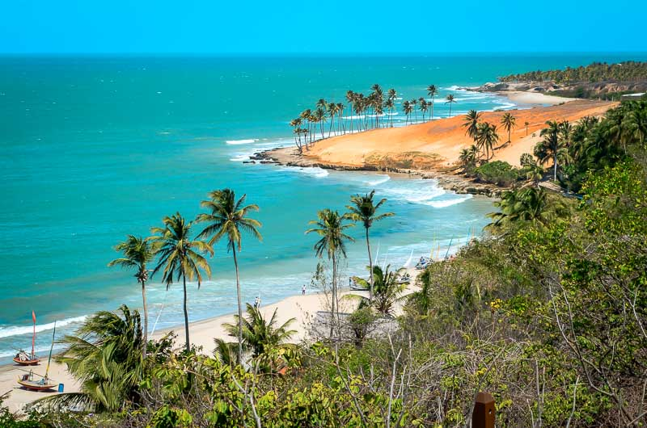

O Ceará, um estado do nordeste brasileiro, tem um interior montanhoso e um litoral atlântico com impressionantes falésias vermelhas. O balneário de Canoa Quebrada tem enormes dunas de areia rosadas e a Rua Dragão do Mar, muito movimentada e também conhecida como Broadway. A cidade isolada de Jericoacoara, cercada pelo Parque Nacional de Jericoacoara, repleto de dunas, é famosa por suas ruas de areia, pela prática de windsurfe e pelo pôr do sol incomum em tons de verde.
 VOLTAR